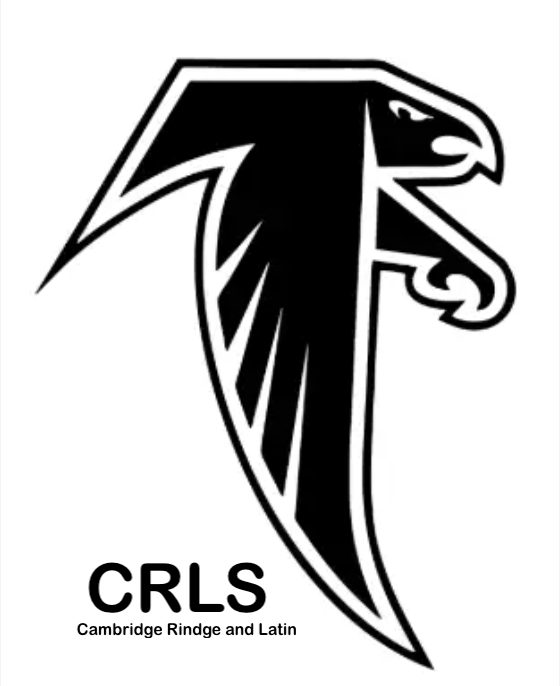

Our Mission
At OurCycle, we believe that the path to a sustainable, zero-waste future begins with transforming unconscious daily habits into intentional, creative routines. Driven by a deep concern for climate change, our mission is to provide Cambridge residents with the precise knowledge and inspiration needed to turn household waste into valuable recoverable resources.
The Project
What started as a student-led community project developed within the framework of the MIT Leadership Training Program by a Cambridge Rindge and Latin School student has evolved into a comprehensive community resource. OurCycle is an independent initiative designed to bridge the gap between scientific waste-stream analysis and everyday household actions. Our goal is to create a centralized, user-friendly "masterlist" that clarifies Cambridge’s specific recycling and composting systems.
The Team

Surya Kumar
Prime Architect & The Mastermind
Surya is a student at Cambridge Rindge and Latin School (CRLS) and a lifelong resident of Cambridge. Having been part of the Cambridge Public School system since the beginning—attending the Morse School, Putnam Avenue Upper School (PAUS), and now Cambridge Rindge and Latin School—he is deeply rooted in this community.
Surya has a lifelong commitment to environmental sustainability and engineering, with a long-term goal of pursuing a career in sustainable design and environmental engineering. His journey began early in elementary school, exploring biomimicry and nature-based design in summer programs—an interest that was further fueled in middle and high school by environmental education in science clubs and electives. As a dedicated member of student government, sustainability development club and the Model UN at CRLS, Surya is passionate about the intersection of technology and civic engagement. Through OurCycle, he combines his training from the MIT Leadership Training Institute with years of actively seeking knowledge to show that small, personal actions can spark a generational movement to protect our shared home planet.
Acknowledgments
We are deeply grateful to the mentors and community members who have provided their time and expertise to help bring OurCycle to life:
- Ms. Newton (Physics Teacher & Lead, CRLS Sustainability Development Club): For her invaluable guidance during the initial brainstorming phases and for helping us define the project's core environmental focus.
- Mr. Andrew (Computer Science Teacher, RSTA at CRLS): For his technical mentorship, programming pointers, and for introducing us to the AI tools that helped streamline our development process.
- The CRLS Sustainability Development Club: To Surya's fellow students at Cambridge Rindge and Latin School, whose peer reviews and feedback ensured the website remains accessible and relevant to our generation.
- The City of Cambridge: Special thanks to Mr. Michael Orr (Recycling Director, City of Cambridge) for reviewing our content to ensure alignment with municipal sustainability efforts and data accuracy.
